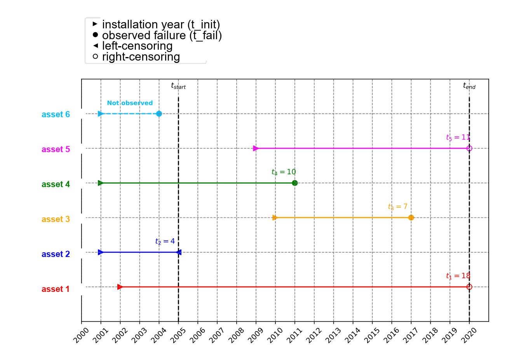
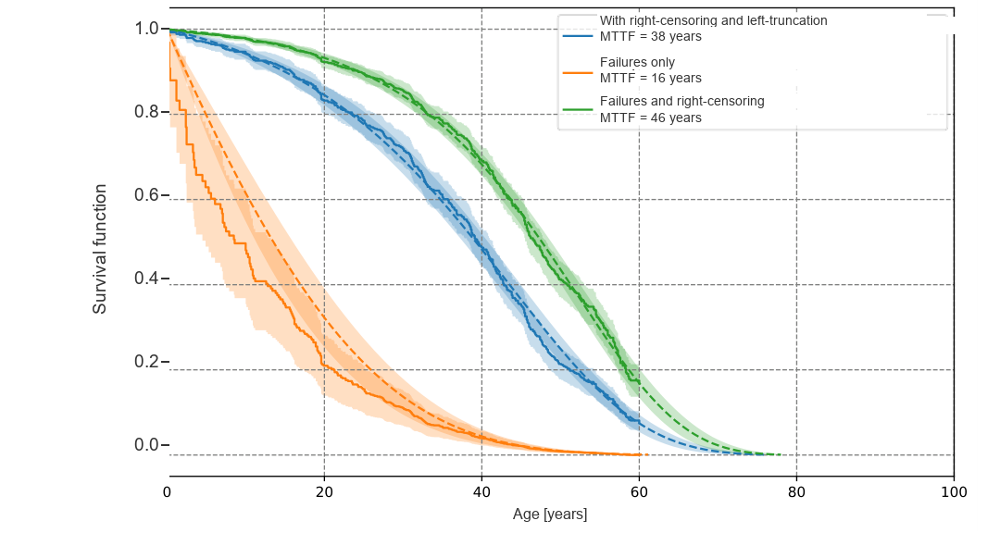

2.2. Censoring and truncation#
A lifetime model describes the duration until a single event of interest occurs. That event is often a failure, which is why failures are used as the running example on this page, but everything below applies to any unique event you choose.
Lifetime data is rarely a clean list of “the event occurred after \(t\) units of time”.
The event might not have occurred when the study ends, monitoring starts after some assets
have already been in service for a while, and dates are sometimes only approximately known.
Any of these turns a simple “event at time \(t\)” record into something less direct, and
ignoring that distinction leads to systematically wrong estimates. AssetLife handles it
through three arguments, time, event and entry.
2.2.1. The observation scheme#
For each asset, four dates matter: when the observation window starts (\(t_{start}\)) and ends (\(t_{end}\)), when the asset’s lifetime starts (\(t_{init}\), typically its installation), and when the event occurred (if that was actually observed). In the figure below, the event is a failure, dated \(t_{fail}\), and six assets are lined up on the same calendar to show combinations that can occur:


Observation scheme for six assets. A filled circle is an observed failure; an open circle means the asset was still working when the observation window ended at \(t_{end}\) (right-censoring, assets 1 and 5); a left-pointing triangle means the asset was found already broken, so it failed at a date that was never recorded, only known to be before the inspection (left-censoring, asset 2); a right-pointing triangle before \(t_{start}\) means the asset was already installed before observation began (left-truncation, assets 1, 2, 4 and 6); and the dashed line is an asset that had already failed before \(t_{start}\), so it never appears in the data (asset 6).#
AssetLife’s event/entry pair covers the two cases that dominate industrial asset data
(right-censoring and left-truncation). The rarer cases, left-censoring (asset 2 above) and
interval-censoring, are expressed by giving time as intervals instead of durations, see
Left censoring and Interval censoring.
2.2.2. Right censoring#
An observation is right-censored when the actual event time is unknown: the event had
not occurred yet the last time the asset was observed, so all we know is that its lifetime is
at least time. This is flagged with event=False, while event=True means the
event was observed at time.
The load_power_transformer dataset (see Datasets), where the event is a failure,
has both kinds of rows:
>>> from assetlife.datasets import load_power_transformer
>>> dataset = load_power_transformer()
>>> dataset[dataset["event"] & (dataset["entry"] == 0)][:2] # observed failures
array([(12.4, True, 0.), (12.6, True, 0.)],
dtype=[('time', '<f8'), ('event', '?'), ('entry', '<f8')])
>>> dataset[~dataset["event"] & (dataset["entry"] == 0)][:2] # still in service at "time"
array([(21.6, False, 0.), ( 4.2, False, 0.)],
dtype=[('time', '<f8'), ('event', '?'), ('entry', '<f8')])
2.2.3. Left truncation#
An observation is left-truncated when the asset had already reached some age without the
event occurring before it was observed. For instance, monitoring only started once a
transformer had already been in service for a while. This is captured with the entry field:
the age at which the asset entered observation (entry=0 if it was observed from the start
of its lifetime).
>>> dataset[dataset["event"] & (dataset["entry"] > 0)][:2]
array([(34.3, True, 34.), (45.1, True, 44.)],
dtype=[('time', '<f8'), ('event', '?'), ('entry', '<f8')])
Here, both transformers were already 34 and 44 (respectively) units old when they were first observed, and failed shortly after, at 34.3 and 45.1.
Left truncation is also what accounts for the assets whose event occurred before the
observation window opened (asset 6 above). Those are simply not in the data, and there is
nothing to pass for them. Their absence is not neutral, though: the assets dropped this way may
be the short-lived ones, so what remains in the window is a population that survived long
enough to be seen. This is the survivor bias described in Why getting this right matters
below, and entry is what corrects it. The larger the observation window, the smaller this
effect.
2.2.4. Left censoring#
An observation is left-censored when the asset was found already broken: it failed at a date that was never recorded, so all that is known is that its lifetime is at most the age at which the failure was noticed.
event cannot express this, since it only distinguishes “event at time” from “no event
yet at time”. A left-censored observation is written as an interval whose lower bound is
the start of the asset’s lifetime, [0., b], see Interval censoring.
2.2.5. Interval censoring#
An observation is interval-censored when the event date is known to fall between two
dates and no better than that, typically between two periodic inspections. Left censoring is
the special case where the lower bound is the start of the asset’s lifetime. Both are passed
by giving time as a two-column array of interval bounds instead of a one-dimensional
array of durations. Each row is then read as \([a_i, b_i]\), the event being somewhere
in between:
Row |
Meaning |
|---|---|
|
event observed at |
|
event between |
|
event before |
|
no event yet at |
2.2.6. Why getting this right matters#
Mishandling either one doesn’t just add noise: it biases the result in a predictable direction, and the effect can be large. On a fleet of high-voltage assets, estimating a mean lifetime under three assumptions gives:


Same dataset, three assumptions. Counting only observed failures and ignoring the still-working assets (mortality bias) gives a mean lifetime of 16 years. Accounting for right-censoring but ignoring left-truncation (survivor bias) gives 46 years. Accounting for both gives 38 years: the correct figure lies in between, not at either extreme.#
Ignoring censoring entirely (mortality bias) systematically underestimates lifetimes, since the (longer-lived) censored assets get discarded or miscounted as short-lived ones. Ignoring left-truncation (survivor bias) does the opposite: it overestimates lifetimes, because assets whose event occurred before observation are invisible to the sample, leaving only the assets that lasted long enough to be seen. This is exactly why every AssetLife lifetime model accounts for both directly in its likelihood.
2.2.7. Fitting with censoring and truncation#
Both are passed to fit together: AssetLife builds the correct likelihood contribution for
each row depending on its event/entry combination:
>>> from assetlife.lifetime_models import Weibull
>>> weibull = Weibull().fit(dataset["time"], event=dataset["event"], entry=dataset["entry"])
>>> weibull.get_params()
array([3.46597396, 0.0122785 ])
Dropping entry (i.e. ignoring the left truncation) changes the fitted parameters, since
the model is then implicitly assuming every asset was observed from the start of its lifetime:
>>> weibull_no_truncation = Weibull().fit(dataset["time"], event=dataset["event"])
>>> weibull_no_truncation.get_params()
array([4.11911713, 0.0122451 ])